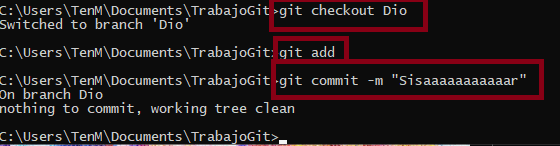
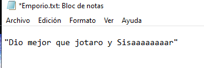
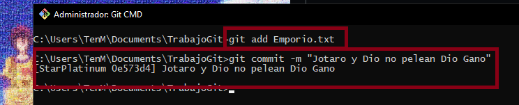

¿Cada cuánto hay que realizar un commit?
Primero debemos saber, que hay que hacer y para que hacer un commit
-
Etapa de Stage:
Tus cambios deben estar en la etapa de "Stage" antes de realizar un commit.
-
Mensaje Descriptivo:
Cada commit debe tener un mensaje descriptivo que explique brevemente los cambios realizados.
-
Añadir Valor:
Hacer un commit debe representar la adición de valor al proyecto. Asegúrate de que los cambios sean significativos y bien documentados.
Cuando hay que hacerlo
Realizar cambios pequeños y lógicos en los commits: Asegúrate de hacer commits con modificaciones de tamaño reducido y coherentes para facilitar el seguimiento, identificar problemas y mantener un historial claro.
Hacer commits cambios específicos: Es importante que cada commit aborde una única funcionalidad, corrección de error o mejora, representando así una unidad indivisible y completa de cambio.
Mantener una frecuencia regular en los commits: Realiza commits con regularidad para mantener un historial claro y facilitar la colaboración en equipos.
Hacer un commit antes de realizar cambios importantes: Antes de llevar a cabo modificaciones significativas como agregar una nueva característica o realizar cambios arquitectónicos, asegúrate de hacer un commit para tener un punto donde puedas restaurar tus cambios si es necesario y facilitar la revisión del código.
Realizar un commit antes de actualizar o sincronizar: Antes de llevar a cabo operaciones como fusionar cambios desde otra rama o sincronizar tu rama con cambios remotos, asegúrate siempre de hacer un commit previo para garantizar que tu historial quede limpio.
¿Cómo podríamos trabajar varias personas en el mismo proyecto?
Creamos un repositorio, e invitamos a las personas que queramos que esten en el.
Importacia de ramas, es recomendable que cada persona trabaje en su propia rama independiente del proyecto(main).
Importante si un invitado / compañero a terminado su trabajo puede combinarla con la rama principal del proyecto
Evitar conflictos de fusión: para poder evitarlos, todos los miembros del repositorio que suban sus trabajos a la rama principal, no deben sobreescribir los cambios de otros trabajadores.

Resolución de conflictos en un merge
Para ponernos en contexto, primero debemos saber que es un "merge". Ya sabemos que en un proyecto suelen trabajar varias personas, y concretamente con git, cada persona suele trabajar en su propia rama, pero varias personas pueden estar trabajando con un archivo en concrecto en sus respecticas ramas. Entonces... ¿qué pasa cuando queremos unir nuestras ramas?
pues bien, el momento en el que fusionamos las ramas se llama "merge". Y si hay archivos que estan en diferentes ramas y modificados de diferente manera en la misma linea de códgio, ,al querer hacer una fusión o "merge" va a acabar en una serie de conflictos ya que en la misma linea de código, habrán cosas diferentes.
a cotinuación vamos a mostrar los pasos para resolver estos conflictos:
1. Nos metemos a la terminal Git
2. Nos dirigimos al repositorio, que esta dando el conflicto de fusión
3. En mi caso he creados dos Ramas una se llama StarPlatinum y la otra Dio
StarPlatinum

Dio
Fase cuatro intentar que tengan conflicto con los Stands.


Ahora probaremos con el merge si Dio y Jotaro pueden convivir

Abrimos el txt para ver que falla y vemos que Stand es

Para arreglar este conflicto debemos, o borrar la linea de StarPlatinum, borrar la Dio o tambien que es lo que he hecho, combinar StarPlatinum con Dio. Quedara asi
Actualizamos el archivo y hacemos un commit con un mensaje significativo. <3
Asi hemos arreglado el conflicto del merge y ahora Jotaro no pelea con Dio porque Gano Dio
Diferencias entre un pull y un fetch.
1. Debemos saber que tanto pull como fetch se utilizan para actualizar la copia local de un repositorio remoto
Tabla de pull y fetch
| Característica | git fetch | git pull |
|---|---|---|
| Descarga cambios | Sí | Sí |
| Fusiona cambios | No | Sí |
| Puede causar conflictos | No | Sí |
| Uso recomendado | Si desea ver los cambios remotos sin fusionarlos | Si desea fusionar los cambios remotos con su rama actual |